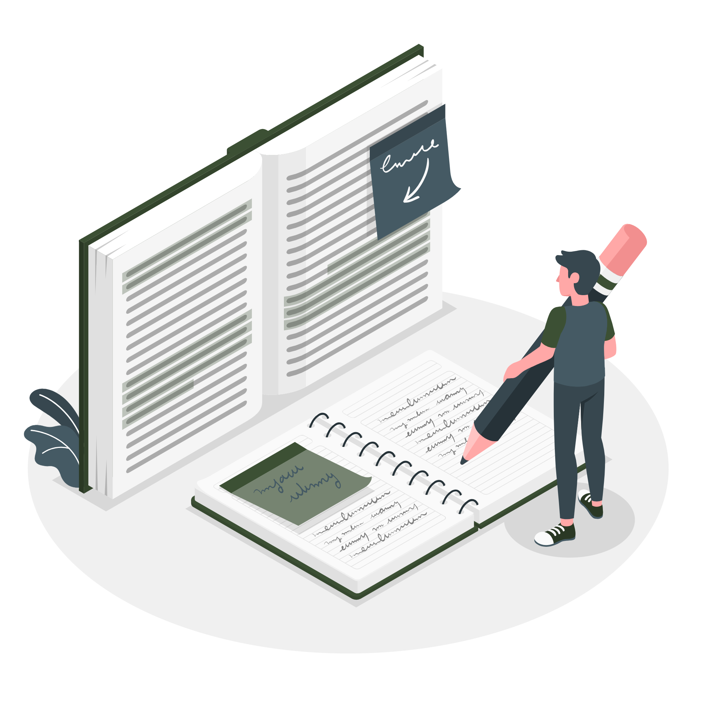
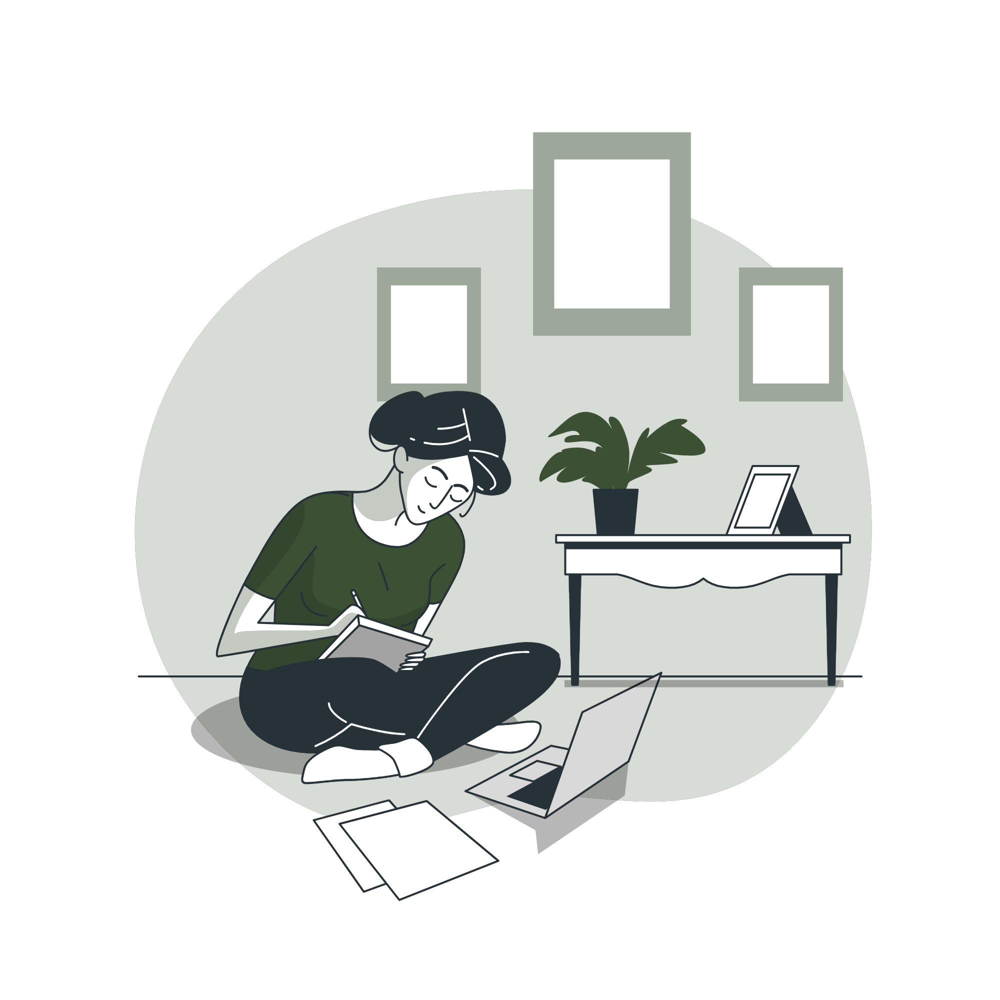

I hope you find my blog posts helpful and that they will inspire you to write your own reflections and insights; everyone has a different
perspective, which is what makes both life and web development so interesting. Your written reflections will really help to develop and mature your learnings;
and you will find that your facility to articulate and recall concepts will vastly improve.
I strongly encourage you to get out the old-fashioned notebook and pen and start writing; once you start you will wonder why you didn't do
so a long time ago!
Recent Posts

Position Fixed
position: fixed is like absolute in most respects except that it is generally positioned relative to the viewport except for a few advanced exceptions. For this discussion, we will just focus on its normal use case.
The header on this website has a position of fixed, width of 100%, top value of 0 and a z-index value of 999. These values mean that the header will always remain at the head of the page as the user scrolls (check it out if you don't believe me!), stretching the full width of the viewport and will always float on top of all elements on the page which have a z-index of less than 999.
Now is an opportune time to speak about z-index. This property allows us to stack elements along the imaginary z-axis that runs from the screen out towards you. This property will only affect elements with a position other than static – i.e., all those which we are presently discussing. Positioned elements have a default z-index of auto which means that if an integer value is not applied the positioned elements will be stacked according to source order, which means later elements will appear on top; when this property is given an integer value it creates a “stacking context” for the element, which means that descendant elements with a z-index integer value are sandboxed within the parent thereby being isolated from surrounding elements. Higher values will remain on top while lower values will be at the bottom of the z-axis within the parent element. Negative values can be implemented to place elements behind others, if you so wish.

Position Sticky
This position contains the attributes of both relative and fixed positions. How it works is that initially it will act like a relative positioned element in that it will just stay in its position in the normal flow; however, the magic of this position appears when you give it a top, bottom, left, or right value so that when its normal flow position reaches the prescribed values from the viewport’s edge, it will just stay “stuck” there as if it has seen a ghost!
Pretty cool effects can be created with this position such as headers in alphabetised lists that will remain at the top of the screen until their list is scrolled off screen and which will then be replaced with the next header, and so on.
Flexbox Introduction
Having discussed positioning methods for individual elements, we will now discuss Flexbox, a very useful modern tool that greatly aids in the layout and alignment of content in a single dimension, i.e., either a single row or column. Flexbox provides very efficient, quick and easy ways to distribute space between flex items (which are children of a flex container).
In order to set an element to be a flex container, you set its display property to display:flex (this will make the flex container itself behave as a block-level element in relation to surrounding elements); display: inline-flex will make the flex container behave as an inline element.
With the display property set, a flex container’s items (children) can be aligned along a main axis (horizontal or inline direction when the flex-direction property is set to row, which is the default) and/or cross axis (which is in the block-level or vertical direction); if flex-direction is set to column the above axes are inverted. I like to use the visualisation technique discussed earlier also here to see with my mind’s eye the main and cross axes. Getting into the habit of visualising these lines running across and up/down the flex container is a great way to quickly become comfortable with using the various flexbox properties to easily align and space the flex children. These properties will be discussed next.